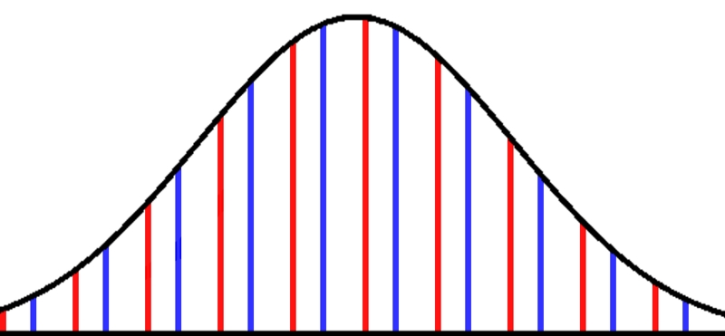

About
In my own words I'd explain Shepard tones like that: you'd press all keys on a piano with the same name, for instance all f-keys, at the same time, and the ones in the middle harder than the very high or low ones, so that the volume would be distributed like a bell curve and the tones outside of the piano just disappear under the hearing threshold, see the image below.
In case of f you'd end up with an f without a specific height. When playing an upward or downward scale, the tones seem to go up (or down) but never leave the hearing range as long as the bell curve stays in place. Such a Shepard scale can go on for a long time, and this is a common effect in film music, for instance in Dunkirk, where the sound seems to rise indefinitely.
The original publication "Circularity in Judgements of Relative Pitch" by Roger Shepard was published in 1964 in the Journal of the Acoustical Society of America.
Shepard tones are implemented in SuperCollider but I wasn't able to understand the code and so I wrote a Shepard tone implementation in Sonic Pi, my first and only Ruby project. The code is much shorter than in the SuperCollider implementation and it comes with options like chords of Shepard tones, alternative synths (meaning others than sine waves) and the positioning of the bell curve as a parameter.
Contradictory sound
In electronic music there can be a sliding scale, unlike on a piano
with its discrete tones.
In my implementation of Shepard tones the placement of the bell curve
can be moved while the sound is playing. Practical aspects of what
your ears and your speakers are able to aside, the bell curve can even
be moved into the hearing range and out of it.
For the small composition in the video I used the possibility to slide
both the bell curve and the pitch, the bell curve moves from a high
pitch to a low pitch and the frequency goes the other way, the sound
gets higher and lower at the same time.
Text last updated: March 15th, 2021